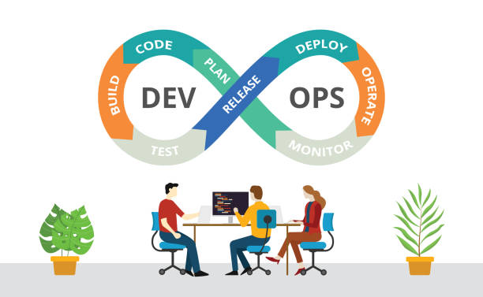

|  |
DevOps is a methodology in the software development and IT industry. Using a set of practices and tools, DevOps integrates and automates the work of software development (Dev) and IT operations (Ops) as a means for improving and shortening the systems development life cycle. CODE: GIT BUILD: MAVEN RELEASE: JENKINS DEPLOY: DOCKER & KUBERNETES OPERATE: TERRAFORM MONITOR: ELK |